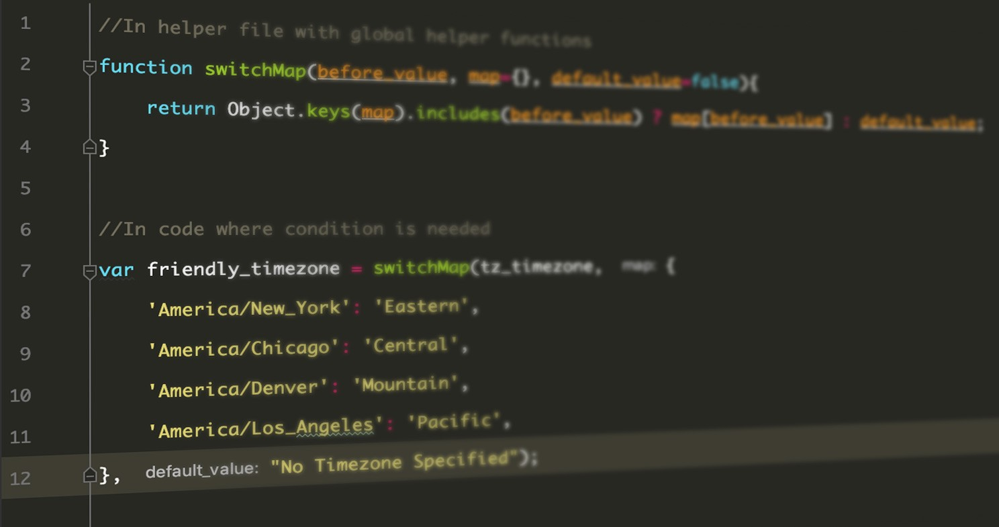

Values in JavaScript
Imagine a sea of bits—an ocean of them. A typical modern computer has more than 30 billion bits in its volatile data storage (working memory). Nonvolatile storage (the hard disk or equivalent) tends to have yet a few orders of magnitude more. To be able to work with such quantities of bits without getting lost, we must separate them into chunks that represent pieces of information. In a JavaScript environment, those chunks are called values. Though all values are made of bits, 10 they play different roles. Every value has a type that determines its role. Some values are numbers, some values are pieces of text, some values are functions, and so on. To create a value, you must merely invoke its name. This is convenient. You don’t have to gather building material for your values or pay for them. You just call for one, and whoosh, you have it. They are not really created from thin air, of course. Every value has to be stored somewhere, and if you want to use a gigantic amount of them at the same time, you might run out of memory. Fortunately, this is a problem only if you need them all simultaneously. As soon as you no longer use a value, it will dissipate, leaving behind its bits to be recycled as building material for the next generation of values. This chapter introduces the atomic elements of JavaScript programs, that is, the simple value types and the operators that can act on such values.
| Type | Example | More |
|---|---|---|
| Numbers | 1,2,3,9.86,2.998e8 | Object Number is a wrapper for primitiv numeric values |
| String | "Lie on the ocean" 'Float on the ocean' | You can use single quotes, double quotes, or backticks to mark strings, as long as the quotes at the start and the end of the string match. |
| Boolean | true, false | It is often useful to have a value that distinguishes between only two possibilities, like “yes” and “no” or “on” and “off”. |